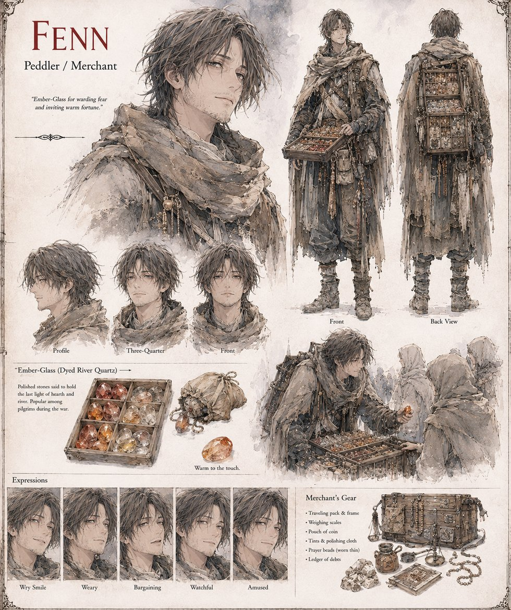

Fenn
Peddler / Merchant
A peddler of no particular loyalty who survives two previous wars by supplying both sides slightly different lies, and who spends the opening weeks of Illumaria's own succession war selling pilgrims small shards of orange-dyed river quartz, warmed over a candle and passed off as splinters of the sovereign's own crown. He calls it Ember-Glass. He believes in it, the Unconquered Sun, and, by his own account, very little else, which he considers sound business rather than a failure of faith.
He reinvents himself into almanacs once genuine relic-hunters start asking pointed questions about his supply chain, and returns to the capital only once more, decades into the Long Peace, to find Blakk personally arguing a farmer's grain-tithe exemption at the palace's lower gate. He writes, that same night, in a ledger he shows no one, that he made a fortune selling counterfeit grace for eleven years, and that the king has been selling the genuine article for nearly thirty and has, so far as he can tell, made nothing at all off it.
“Ember-Glass for warding fear and inviting warm fortune.”
Appears in The Vessel of Unmediated Grace